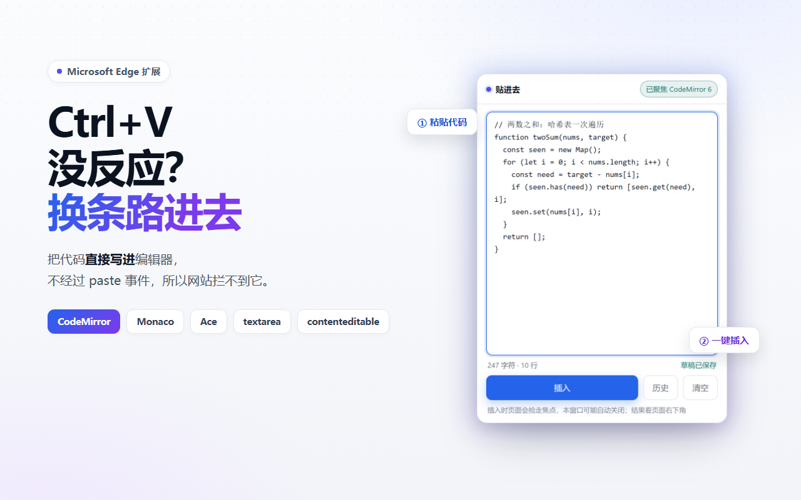
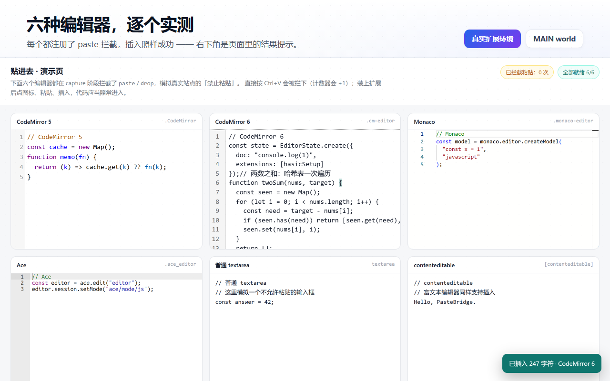
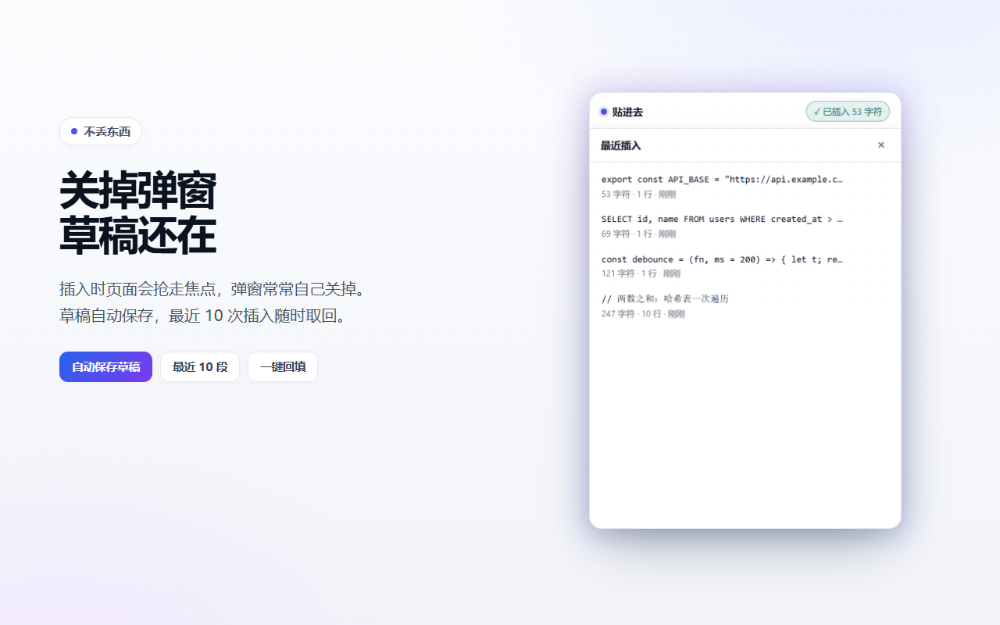
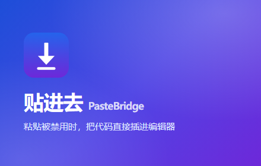

把「贴进去」送上 Edge 商店的货架
包已经打好了，图已经拍好了，台词已经写好了。剩下的是注册账号、点几个按钮、等审核。 全程不需要写一行代码，唯一要花钱的地方是——没有，注册免费。
✓现状：已经备好的三样
下面这些不用你动手，直接拿去用。
0先在 Edge 里装一遍 5 分钟 · 别跳过
提交前自己先用一次，能提前撞见审核员会撞见的问题。
- Edge 地址栏输入
edge://extensions - 左下角打开 开发人员模式（Developer mode）
- 点 加载解压缩的扩展，选择项目根目录（有
manifest.json的那一层） - 点浏览器右上角的拼图图标，把「贴进去」固定到工具栏
npm run demo，打开
http://localhost:8080。演示页里六个编辑器都在 capture 阶段拦了 paste，
先按 Ctrl+V 看计数器 +1，再用扩展插入。1注册开发者账号 免费 · 个人账户当天可过
Edge 的扩展走 Partner Center，不走 Chrome 那边那套。注册不收费。
| 项目 | 说明 |
|---|---|
| 入口 | partner.microsoft.com/dashboard/microsoftedge/public/login |
| 账号 | 必须是 Microsoft 账户（outlook.com / live.com / hotmail.com），而且得是这个 Partner Center 账户的主所有者。用 GitHub 账号登录也行，系统会自动给你建一个 MSA。 |
| 不支持 | 工作/学校账户（Entra 组织账号）不能用来注册。 |
| 账户类型 | 选 Individual（个人）。流程短，只需验证发布者名称可用。注册后不能改成公司，国家/地区也不能改。 |
| 发布者名称 | 商店里显示的名字，最多 50 字符。建议 PasteBridge 或 error45678980。 |
| 协议 | 勾选 App Developer Agreement，点 Finish。 |
2上传 zip 2 分钟
Partner Center 仪表板 → Create new extension → 把 store/package/pastebridge-1.0.0-edge.zip 拖进去。
- 系统会自动校验包：manifest 是否合法、图标是否齐、权限是否写对。有错当场报，改完重传。
- 校验通过后点 Continue，进入填表流程。
- 包里
manifest.json必须在根目录——已经帮你确认过了，不在任何子文件夹里。
manifest.json 的
name 和 description。想改？只能改 manifest、重新打包、重新上传。
所以——现在就是改文案的最后窗口，见 listing-zh.md 里那句建议。3可用性与属性 1 分钟
Availability
Visibility：Public
想先小范围试水就选 Hidden，只能靠直链安装，搜不到。
Markets：全部市场（默认）
Properties
Category：Developer tools
Website：仓库地址
Support：…/issues
Mature content：否
4隐私表单 审核重灾区 · 慢一点填
这一步决定了你是「一周过」还是「来回三趟」。三块内容：单一用途、权限理由、数据使用。
4.1 单一用途（Single purpose）
4.2 权限理由（Permission justification）
三个权限，一条都不能空着。理由要讲技术上的非它不可，不是「我需要它」。
4.3 远程代码 / 数据使用
- 远程代码：选 否。所有逻辑都在 zip 里，没有 eval、没有动态 import。
- 数据使用：九项全部不勾。草稿和历史只写本地，不传输，所以算「不收集」。
4.4 隐私政策 URL
必填。文件已经写好在 store/privacy-policy.md，中英双语。把它变成一个网址，三种做法：
| 做法 | 地址长什么样 | 耗时 |
|---|---|---|
| A · GitHub 直链 | github.com/error45678980/pastebridge/blob/main/store/privacy-policy.md | 推完即用 |
| B · GitHub Pages | error45678980.github.io/pastebridge/privacy.html | 约 5 分钟 |
| C · 自有域名 | 你的站 | 最稳 |
5商店列表与素材 每个语言都要传 logo
5.1 尺寸与限制
| 素材 | 规格 | 要求 |
|---|---|---|
| 扩展 logo | 300 × 300，1:1 最小 128×128 | 每个语言必填 |
| 截图 | 1280 × 800 或 640 × 480 | 可选，最多 6 张，强烈建议传 |
| 小宣传图 | 440 × 280 | 可选 |
| 大宣传图 | 1400 × 560，PNG | 可选，首页推荐位用 |
| 详细描述 | 250 – 10,000 字符 | 每个语言必填 |
| 搜索词 | 最多 7 个词，每个 ≤30 字符，合计 ≤21 单词 | 可选，但不填等于放弃搜索流量 |
5.2 素材已经生成好了




5.3 文案
中文长描述、搜索词都在 listing-zh.md，整段复制即可。英文版在 listing-en.md。
_locales 目录，Partner Center 只会给一个语言行。
最省事的做法：这一行直接填中文。想同时挂中英两行，得给包加 i18n ——
步骤写在 listing-en.md 末尾。6认证备注与提交 通过率的胜负手
Notes for certification 是给审核员看的手册。这个扩展有个特点：不点图标就什么都看不到。 不写清楚，审核员很可能打开页面、发现没反应、直接判「功能不工作」。
提交前最后一遍
- zip 里
manifest.json在根目录 - 每个语言都传了 300×300 的 logo
- 详细描述 ≥ 250 字符（复制过去就够）
- 三个权限的理由都填了，没有留空
- 隐私政策 URL 在无痕窗口里打得开
- Notes 里的测试网址你自己点得开
- 自己在 Edge 里侧载试过一遍
点 Submit。之后状态会从 In review 走。
7审核之后
通过了
扩展会出现在 Edge 加载项商店，用户搜得到、装得上，后续版本自动更新。 首次审核一般 1–7 个工作日。
可以在详情页补宣传图、改描述——这些不用重新传包。
被拒了
不封号。邮件会指到具体条款，改完重新提交即可。
最常见的两类：权限理由写得太敷衍、单一用途描述太宽。对策见附录。
发新版本
改完代码，把 manifest.json 的 version 加一，然后：
把新 zip 传到 Packages 页，提交。版本号必须比上一版大，否则会被拦。
!附录 · 五个风险与对策
① 「绕过」这个词
商店里能搜到 Bypass Quora Pop-ups 这类扩展，说明「bypass」本身不是红线。 但描述里不要出现破解、付费墙、反检测、去水印这类词——那才是真雷区。
已经在 listing-zh.md 里把措辞软化成「替代输入方式」，
并给了一句更温和的简短描述建议。要改的话现在改，上传后就只读了。
② 审核员可能「测不出功能」
没有 host_permissions 意味着：不点图标，扩展什么都做不了。
审核员如果按常规套路打开页面等效果，会以为它坏了。
对策：Notes for certification 里把「必须先点图标」放在第一段，配 2 分钟分步流程。
③ 没有公网演示页
你的 demo/ 只能在本地跑。审核员不会 npm run demo。
对策：Notes 里用了三个公开可访问的官方示例页（CodeMirror、Monaco、Ace）， 足够验证插入能力。想把自家演示页也放上去，就发 GitHub Pages：
store/ 里没有敏感信息，但推送前还是自己扫一眼。④ iframe 与自研编辑器
v1 不支持 iframe 里的编辑器。描述里已经写成「已知限制」—— 主动交代限制比被审核员发现要安全得多，也少一堆差评。
⑤ 版本号与包一致性
每次重传 zip，version 必须递增。忘了改会直接卡在提交环节。
build-package.py 的文件名带版本号，扫一眼就知道传的是哪个。
≡附录 · 文件清单
| 文件 | 用途 |
|---|---|
package/pastebridge-1.0.0-edge.zip | 要上传的东西，24 KB，14 个文件 |
assets/logo-300.png | 商店 logo，每个语言必填 |
assets/screenshot-1..3-1280x800.png | 商店截图，三张 |
assets/small-promo-440x280.png | 小宣传图（可选） |
assets/large-promo-1400x560.png | 大宣传图（可选） |
listing-zh.md | 中文文案：长描述、搜索词、分类 |
listing-en.md | 英文文案 + 加 i18n 的步骤 |
partner-center-answers.md | 填表答案总表（权限理由、数据使用、认证备注） |
privacy-policy.md | 中英双语隐私政策，顶部写了怎么变成网址 |
build-package.py | 重新打包（改完版本号就跑它） |
build-assets.mjs | 重新生成所有素材（改了 UI 就跑它） |
build-package.py 固定了 zip 内部时间戳，
同样的代码永远产出同样的包；build-assets.mjs 每次重新拍图，不会累积旧文件。贴进去 · PasteBridge — Edge 上架手册 · 2026-10-25